本篇目录
14. 如何赋予 LLM 规划能力？
👔面试官：说说你是怎么给 LLM 加规划能力的？
🙋♂️我：规划能力主要靠 CoT，就是在 prompt 里加一句「请一步步思考」，让 LLM 把推理过程写出来，就有规划能力了。
👔面试官：CoT 就是规划能力的全部？你有没有想过 CoT 最大的问题是什么？
🙋♂️我：CoT 的问题……就是有时候推理链比较长，token 消耗多一些？
👔面试官：不对。CoT 是单条推理链，一旦一开始方向走错，后面全错，没有任何纠偏机制。ToT 就是为了解决这个问题才出来的，你知道 ToT 怎么做的吗？
🙋♂️我：ToT 是同时生成多条推理链，然后选最好的那个，类似于 beam search 的思路？
👔面试官：方向对，但不够准确。ToT 不是最后才选，而是边探索边评估边剪枝，是一个循环的过程。那 GoT 又比 ToT 多解决了什么问题，你说说看？
被问到这里，才发现「加个 CoT 就是规划能力」这个认知太浅了。三种机制是层层递进的，搞清楚每一步在解决什么问题，才是真正理解了规划能力。
💡 简要回答
给 LLM 加规划能力主要靠这几种思路。
CoT 是让 LLM 把推理步骤写出来，线性地一步步推导到答案；
ToT 是让它同时探索多条推理路径，选最优的继续深入；
GoT 是图结构推理，推理节点可以复用和合并，适合更复杂的任务。
工程上我用 CoT 最多，因为实现成本最低，就是改个 prompt；ToT 效果更好但调用次数多，成本大概是 3 到 5 倍；GoT 目前还比较学术，生产环境我没见过有人真正落地用的。
📝 详细解析
要理解为什么需要规划能力，先看 LLM 在没有任何规划机制时是怎么运作的。
普通的问答模式下，LLM 接到一个问题，就直接「一口气」生成答案，中间没有任何推理过程。这对简单问题没啥大问题，但遇到需要多步推导的任务就很容易翻车。
比如让它做一道需要 3 步推导的逻辑题，如果直接让它给答案，出错概率会远高于让它把每步都写出来。
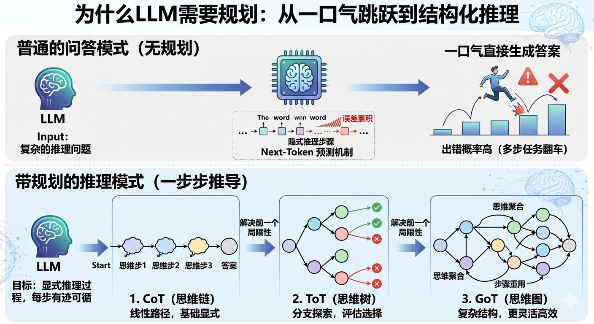
背后的原因是 Transformer 的 next-token 预测机制，每个 token 是基于前面所有 token 生成的，推理链越长、隐式的跳步越多，误差就越容易在中间某一步悄悄累积，最后给出一个看起来很自信但其实是错的答案。
「规划能力」要解决的就是这个问题：把 LLM 隐式的推理过程显式化，让它不再是「一步跳到答案」，而是「一步一步推到答案」，每步都有迹可循。
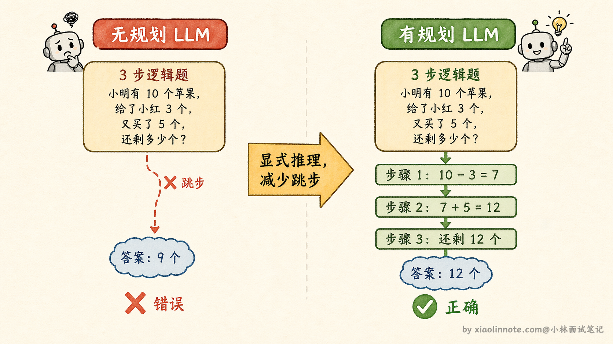
CoT、ToT、GoT 是这个方向上依次演进的三种方案，每一个都在解决前一个的局限性。
CoT：最简单的激活方式，加一句话就够了
CoT 的全称是 Chain of Thought（思维链），核心思路极其简单：在 prompt 里加一句「请一步步思考」，LLM 就会把推理过程逐步写出来，而不是直接蹦出答案。
为什么这么简单的改变就有效？
本质是因为 LLM 的输出是顺序生成的，当它先输出推理步骤，这些推理内容会进入上下文，影响下一个 token 的生成。换句话说，「写下来的推理过程」本身就成为了后续生成的依据，帮助 LLM 不跳步、不乱想。就好比你在纸上演算数学题，把每一步写出来之后，下一步出错的概率会比在脑子里算要低得多，原理是一样的。
CoT 有两种触发方式。
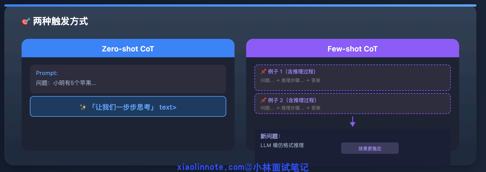
- 第一种叫 Zero-shot CoT，就是直接在 prompt 末尾加「让我们一步步思考」，LLM 自己展开推理，不需要额外例子；
- 第二种叫 Few-shot CoT，给几个带有完整推理过程的例子，让 LLM 模仿这种推理格式来回答新问题，效果通常更稳定。
CoT 的局限很明显：它只有「一条推理路径」。如果一开始走错了方向，整条链就歪了，没有任何纠偏机制。
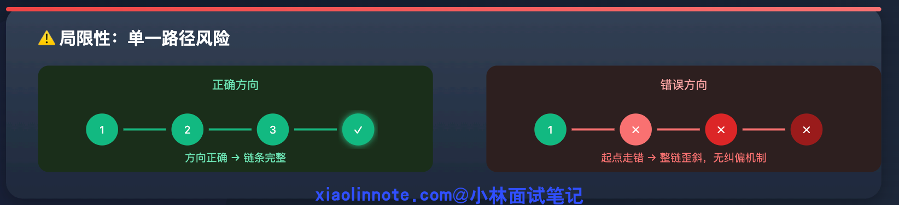
ToT：从「一条链」到「一棵树」，解决走错方向的问题
ToT 的全称是 Tree of Thoughts（思维树），针对的正是 CoT「一旦走错就全错」的问题。
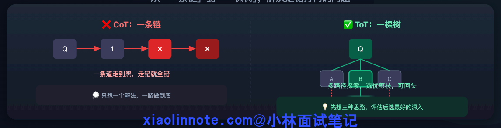
核心改变是把「生成一条推理链」变成「同时探索多条推理路径，边探索边剪枝，最终选出最优路径」。用一个生活类比来理解：CoT 像你做题时只想了一个解法，一路做到底；ToT 像你先想了三种可能的解题思路，评估了一下哪种最靠谱，选了最好的那条继续深入，另外两条直接放弃。
ToT 的执行流程可以分三步来理解。
首先是生成多个候选思路，让 LLM 针对同一个问题给出 3 个不同的初步方向，而不是只走一条路。
然后是评估每个思路的可行性，用另一个 LLM 调用（或同一个 LLM 带上评估 prompt）给每个思路打分，判断哪个最有希望。
最后是选优继续深入、剪掉差的，只保留分数高的思路，再展开下一层推理，反复循环直到得出最终答案。
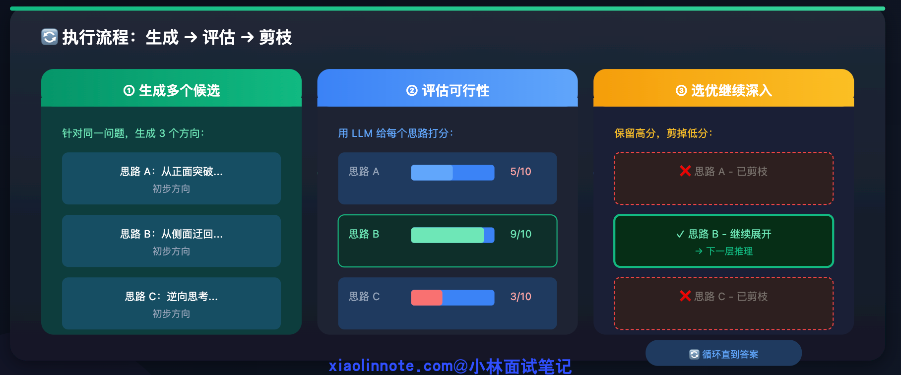
这个「生成 -> 评估 -> 剪枝」的循环，让 LLM 不再是「一条道走到黑」，而是有了探索多条路、选好的走、发现走错了还能回头的能力。代价也很明显：原来 CoT 一次生成就搞定，ToT 需要多次 LLM 调用（多条路径 × 多层深度 × 每层还要评估）。具体多几倍要看路径数和搜索深度：典型设置（每层 3 条路径、搜 2-3 层）下成本通常是 CoT 的 3-5 倍；极端场景（深搜、更多路径、每步都打分）可能到 10 倍以上。
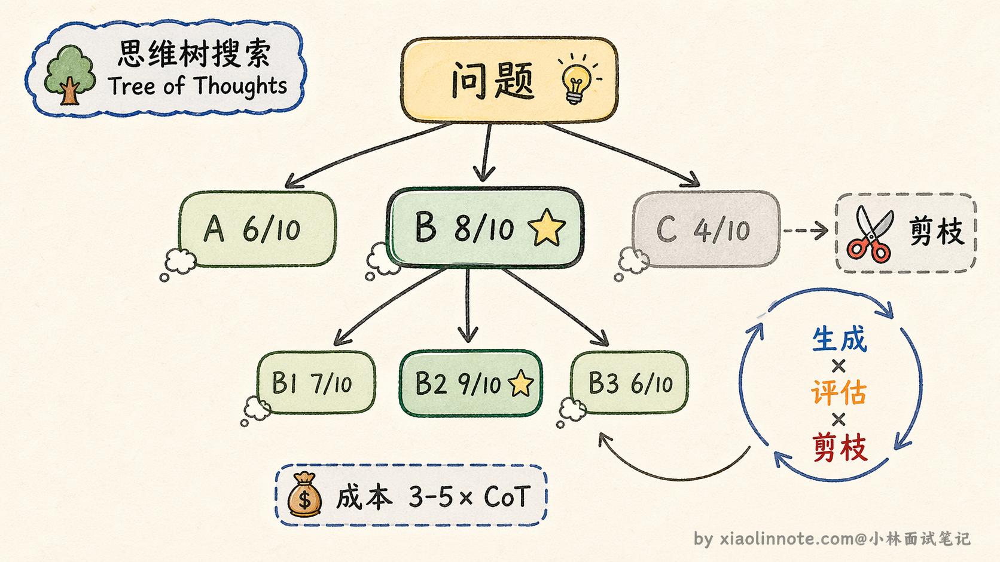
GoT：从「树」到「图」，解决推理结果不能复用的问题
GoT 的全称是 Graph of Thoughts（思维图），是在 ToT 基础上再进一步的进化。
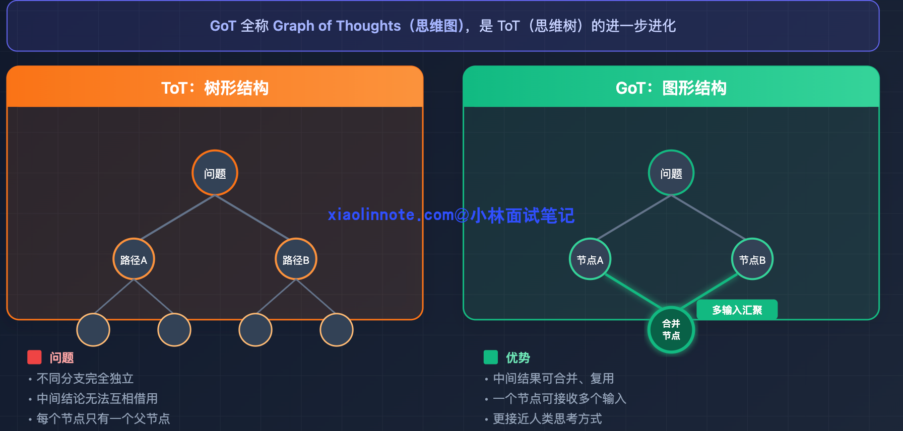
ToT 虽然引入了多路径探索，但它是树形结构，不同分支之间完全独立，两条推理路径上的中间结论无法互相借用。GoT 把推理结构换成了图，允许不同路径的中间结果合并、复用，也就是说一个推理节点可以接收来自多个前置节点的输出作为输入。
举个具体例子：如果任务是「分别研究竞品 A 和竞品 B，然后做综合对比分析」。ToT 里研究 A 和研究 B 是两条独立的路径，各自得出结论；但「综合对比分析」这一步需要同时用到两条路径的结论，在树形结构里很难自然表达，因为树的每个节点只有一个父节点。
GoT 的图结构允许把「研究 A 的节点」和「研究 B 的节点」的输出，汇聚到「综合对比分析节点」，这种「多个中间结论合并输入到下一步」的操作在图里是一等公民，表达起来非常自然。
GoT 能建模的推理模式比 ToT 更丰富，也更接近人类实际处理复杂任务的思考方式。但落地复杂度很高，目前主要还是学术研究场景，生产环境里极少见到真正用起来的。
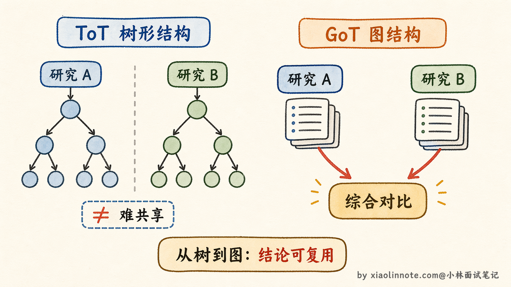
三者的演进关系
把这三者放在演进视角里看，逻辑非常清晰。
CoT 解决了「要不要把推理显式化」的问题，答案是要，把过程写出来就能显著减少跳步出错。ToT 解决了「走错方向怎么办」的问题，答案是先多探索几条路，边走边评估边剪枝。GoT 解决了「不同推理路径的中间结论能不能复用」的问题，答案是把结构从树换成图，自然支持结论汇聚与复用。每一步都是在前一步的基础上发现局限、针对性改进。
工程上怎么选？CoT 几乎是所有任务的标配，加一句话、零成本，直接加到 system prompt 里就行。ToT 在准确率要求很高、任务比较复杂的场景值得考虑，但要做好调用成本增加 3-5 倍（极端情况更多）的心理准备。GoT 目前工程落地不成熟，主要了解它的思想即可，真实项目里不必强行引入。
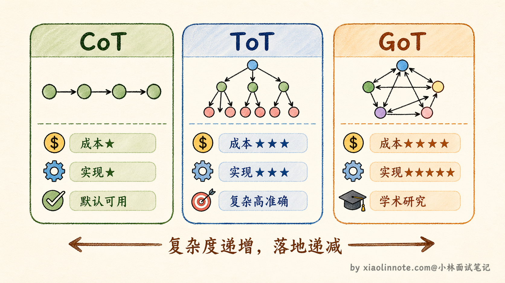
工程里真正常用的规划模式：Plan-and-Execute
CoT、ToT、GoT 说的都是「怎么让 LLM 把推理过程做得更好」，但在真实的 Agent 项目里，还有一种更贴近工程实践的规划模式，叫做 Plan-and-Execute（先规划再执行）。
这个模式的思路很直白：面对一个复杂任务，先让 LLM 制定一份完整的执行计划，把任务拆成若干步骤，然后一步一步执行，每完成一步就检查一下进度，必要时调整后续计划。你可以把它理解成「先写大纲再动笔」的写作方式，而不是拿到题目就开始一口气往下写。
为什么需要这种模式？因为 CoT 虽然能让 LLM 逐步推理，但它是「边想边做」的，走到哪算哪，没有全局视角。对于一个需要调用多个工具、经历多个环节的复杂任务来说，如果没有一个整体规划，LLM 很容易在某一步跑偏，后面的步骤全都白费。Plan-and-Execute 的核心价值就是：先用一次 LLM 调用建立全局视角，再用后续调用逐步落地，把「规划」和「执行」分成两个阶段来做。
具体执行流程分三步。
- 第一步，Planner（规划器）接收用户任务，生成一份步骤清单，比如「第一步搜索相关资料，第二步整理关键信息，第三步撰写总结报告」。
- 第二步，Executor（执行器）按照清单一步步执行，每步可能涉及工具调用或 LLM 推理。
- 第三步，也是容易被忽略的关键，每执行完一步，会有一个 Re-planner（重新规划器）回顾当前进展，判断原来的计划还适不适用，如果中间发现了新的信息或者某步执行结果不符合预期，就动态调整后续步骤。
这个模式和 ReAct 是什么关系？ReAct（Reasoning + Acting）是一种让 LLM 在每一步都先「思考」再「行动」再「观察」的循环模式，它的特点是每步都是即时决策，没有提前规划。Plan-and-Execute 则是在 ReAct 的基础上加了一层全局规划，你可以理解成 ReAct 负责每一步怎么执行，Plan-and-Execute 负责这些步骤的整体编排和动态调整。两者不是替代关系，而是经常搭配使用的。
工程上 Plan-and-Execute 的好处很明显：规划和执行分离之后，规划阶段可以用更强的模型（比如 GPT-4）来保证方向正确，执行阶段可以用更快更便宜的模型来提高效率，成本和质量都能分别优化。LangGraph 里就内置了这种模式的支持，用起来相当方便。
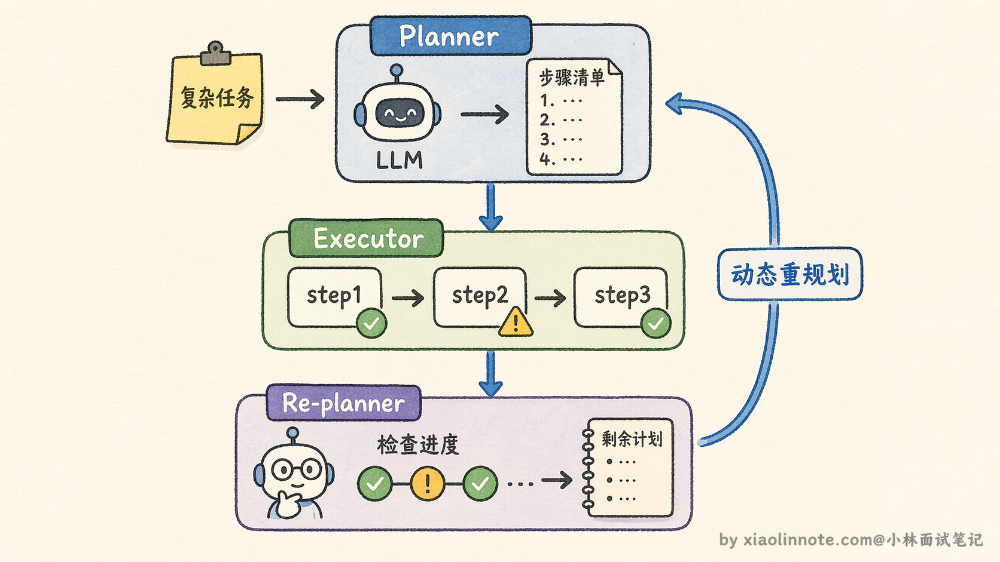
🎯 面试总结
回顾开头踩的雷，第一个最典型：把「CoT 就是规划能力」画等号，这是这道题最常见的误区。规划能力是个方向，CoT 只是最基础的一种实现手段。
答好这道题有几个层次。
首先要说清楚为什么需要规划能力，LLM 默认「一口气」生成答案，没有显式推理过程，多步推理任务容易跳步出错，规划机制就是把隐式推理过程显式化。
然后要说三种机制的演进逻辑：CoT 解决「要不要把推理写出来」，ToT 解决「走错了方向怎么纠偏」，GoT 解决「不同路径的中间结论能不能复用」，每一个都是针对上一个的局限性改进。
最容易被忽略的考点是工程取舍：CoT 几乎零成本；ToT 效果更好但典型调用次数是 CoT 的 3-5 倍（具体看路径数和深度），要明确说出这个数字；GoT 目前学术阶段，生产环境没有成熟落地。
面试里如果能把工程成本和适用场景说清楚，比只讲原理要加分得多。
对了，AI Agent的面试题会在「公众号@小林面试笔记题」持续更新，林友们赶紧关注起来，别错过最新干货哦！